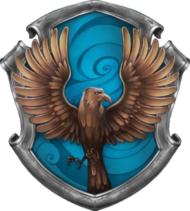

Casas de Hogwarts
-

Lar dos bravos e cavalheiros, o símbolo da Grifinória apresenta em seu estandarte um orgulhoso leão, acompanhado das cores vermelha e amarelo-dourada. A Casa valoriza feitos de coragem e superação pessoal que costumam ser realizados por altruísmo. Seus estudantes tendem a ser bastante aventureiros, mas se destacam, sobretudo, pela lealdade.
-

Os estudantes da Lufa-Lufa são dedicados, pacientes e honestos. Suas admiráveis características os tornam trabalhadores árduos e modestos, sendo receptivos a todos os demais tipos de bruxos. Por outro lado, o excesso dessas qualidades pode se tornar um ponto negativo: justamente por sua flexibilidade e compreensão, os alunos podem ser complacentes e muito dependentes de outras pessoas, tornando-se ingênuos.
-

Os bruxos pertencentes à Corvinal se destacam por sua exímia inteligência. Nesse contexto, suas principais características são relacionadas a sabedoria, criatividade e personalidade única, o que garante a eles certa excentricidade. Contudo, a valorização exacerbada do academicismo pode torná-los perfeccionistas, frios, insensíveis e demasiadamente críticos em relação às outras Casas.
-

Sonserina é a Casa com a pior reputação. Parte dessa fama é, de certa forma, justificável, já que ela abrigou alguns dos maiores bruxos das trevas enquanto ainda eram estudantes. Entretanto, muitos de seus membros têm boas qualidades que redimem a má fama, o que os torna grandes alunos e líderes natos.
Ficou em dúvida com qual das Casas você mais se identifica? Felizmente, apesar de não ter uma ferramenta tão prática como o Chapéu Seletor, o site oficial Wizarding World (já conhecido como Pottermore) oferece teste para seleção de Casas, tipo de varinha e até mesmo Feitiço do Patrono.